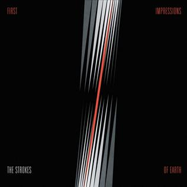
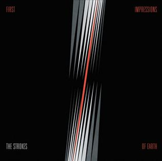

The Strokes
 



Who are those handsome fellas?
"The Strokes" is an American rock band formed in New York City in 1998. Its members are guitarists Albert Hammond Jr. and Nick Valensi, bassist Nikolai Fraiture, drummer Fabrizio Moretti, and singer and front man Julian Casablancas. The band has released six studio albums as of February 2025, including "Is This It", "Room On Fire", "First Impressions of Earth", "Angles", "Comedown Machine", and "The New Abnormal". While I am not as familiar with their impact on the rock genre as some, they are often credited with reviving the genre in the early 2000s with the staple garage-like, under-produced sound of their first album. This sound has evolved with every album, meaning that The Strokes does not have a standard "sound". Rather, it is the song-writing, performances, and vocal work that fans often credit as the reason they love band so much. While the quality and reception of the band's material has seen several ups and downs throughout the years, The Strokes has dedicated fans who are always eager to hear where the band's sound will go next.
I had given The Strokes several chances before I finally came to genuinely enjoy their music. I had listened to songs from their most popular albums, "Is This It" and "The New Abnormal", but the sound never "clicked" with me. One night, though, while I was listening to "Is This It", it did. It really was a click; for the rest of that listening session, I was in love with what I was hearing. I must have listened to "Is This It" dozens of times in the next few weeks, finding more and more to appreciate each time. I tend to be someone who is most enticed with melody when it comes to music. Things like production and sound are obviously important, but if the melodies in a song don't hook me, it is difficult for me to enjoy a song. Interestingly, lyrics seem to be the least important aspect of a song for me; I can appreciate good lyrics, but only if I appreciate the rest of the song first. When The Strokes finally clicked for me, it's because my brain recognized the special relationship the band creates between melody, production, and production. In several of the songs on "Is This It", these elements came together in a way that had me absolutely hooked. That first experience is one of the greatest moments I have ever had while listening to music.
Since then, I have had time to experience all of their albums, but I have especially dug into "Room On Fire" and "The New Abnormal", both of which have become some of my favorite music albums of all time. "Room On Fire" specifically has a style that I am absolutely in love with. I have listened to "Is This It", "Room On Fire", and "The New Abnormal" to the point that I am as familiar as can be with the sound of these albums, and have only recently been able to start appreciating the lyrics of the songs within them. I appreciate the approach Julian Casablancas takes when it comes to writing lyrics. It is a perfect balance between telling a strong narrative story and having no meaning at all. There's meaning there, and very specific emotions and scenarios are elicited. However, there is not much of a narrative, and listeners can apply many of the lyrics to a variety of situations, making the lyrics well-written and accessible. There is so much that can be said about this band, but they have had a profound impact on me and my music journey, and are my favorite band of all time.